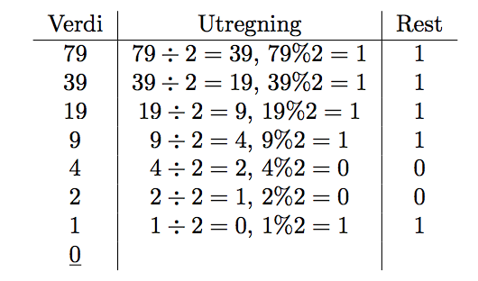
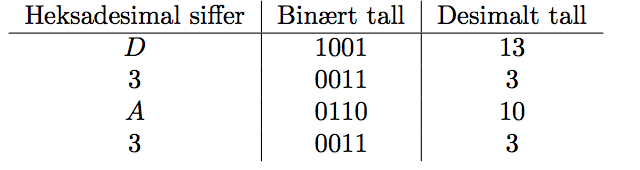

Konvertering til Binær
3.1 Desimale tall
Algoritmen for ˚a konvertere fra desimale tall til binære tall er ganske enkel i teorien: • Del tallet
p˚a to (heltalssdivisjon). F˚ar vi rest? – Ja: skriv ned resten (alltid 1 for binære tall) – Nei:
skriv 0 • Start p˚a toppen igjen, helt til svaret p˚a heltallsdivisjonen er 0 La oss prøve med tallet
79:
 Det ferdige binære tallet leser vi s˚a nedenfra og opp i kolonnen Rest. I dette
tilfellet er 7910 = 10011112 Vi gjør en modulo-beregning med % som vi kjenner fra Java for ˚a finne
resten. I praksis ser vi egentlig bare p˚a om tallet er et oddetall eller partall, oddetall f˚ar
alltid rest.
3.2 Heksadesimale tall
Det er en veldig tett sammenheng mellom binære og heksadesimale tall, og det er hovedgrunnen til at vi
lører oss det heksadesimale tallsystemet. Den enkleste m˚aten ˚a g˚a fra et heksadesimalt tall til
et binært tall er ved ˚a rett og slett se p˚a hvert enkelt siffer i det heksadesimale tallet og finne
det tilsvarende binære tallet, for s˚a ˚a sl˚a de binære tallene vi har funnet sammen i akkurat den
samme rekkefølgen som de sto i det heksadesimale tallet. Denne metoden er utrolig rask, og det er
derfor en fordel ˚a lære seg det binære tallet for tallene 0 − f16 som vi trenger i denne metoden.
Vi tar et eksempel, vi gjør D3A316 om til binær:
 Videre konkatenerer vi de fire binære siffergruppene, og her er det veldig viktig
at vi f˚ar med alle tallene, ogs˚a nullene. Vær oppmerksom p˚a at + her ikke betyr matematisk plussing,
men konkatenering. Pass p˚a at rekkefølgen til siffergruppene er det samme som rekkefølgen de heksadesimale
sifrene sto i før vi begynte konverteringen. 1001 + 0011 + 0110 + 0011 = 10010011 01100011 Legg her
spesielt merke til at vi g˚ar ovenfra og ned i motsetning til da vi regnet fra desimale tall, og
at vi gjerne deler det binære tallet opp i grupper p˚a 8 siffer for ˚a forbedre leseligheten.